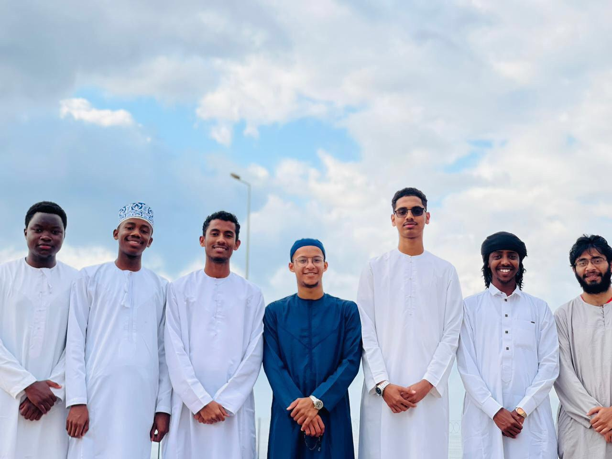
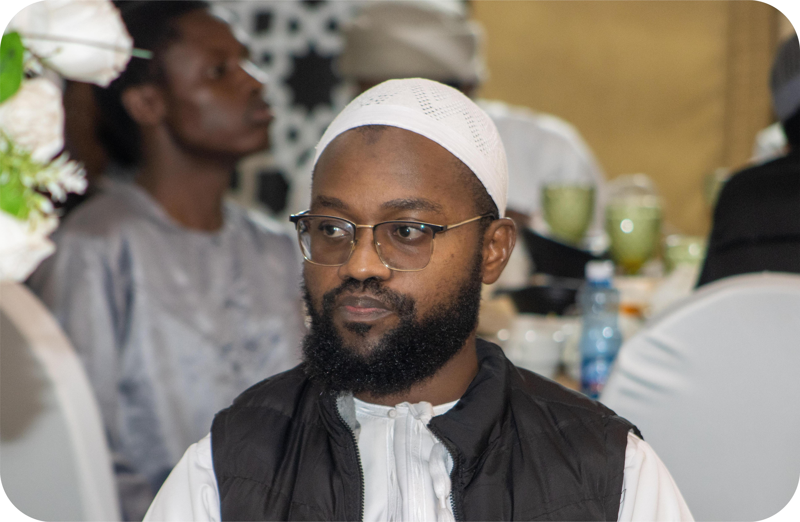
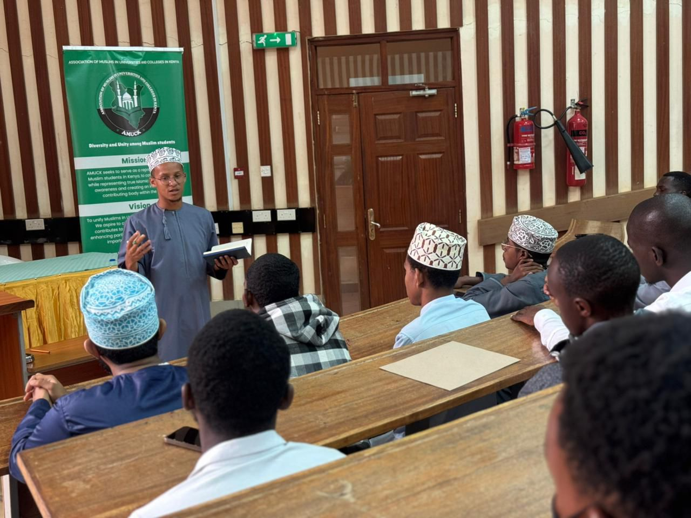
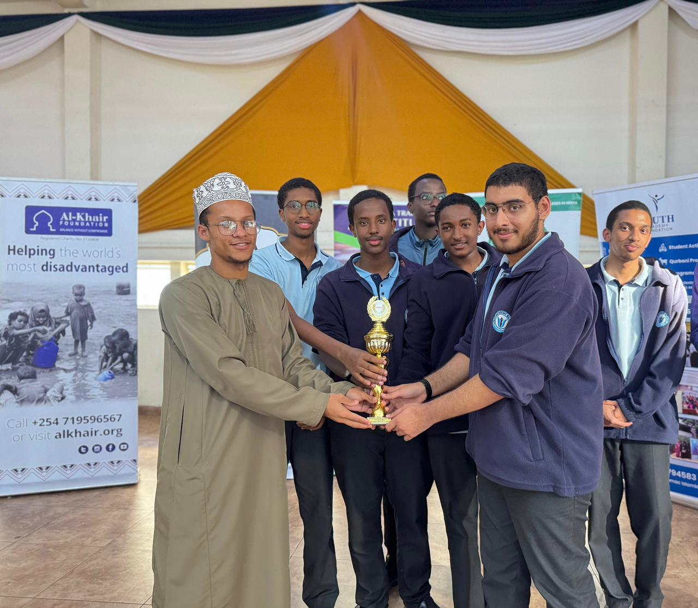

A United Voice for Muslim Students
We bring together Muslim students at Maseno University under a shared vision of faith, unity, leadership and service. Through collaboration and collective action, we nurture principled leaders and champion initiatives that advance student welfare.
Register an AssociationOur Mission
To serve and support Muslim students at Maseno University. We are committed to upholding Islamic values, spreading beneficial knowledge, and building an integrated and contributing student community.
Our Vision
To nurture a united and confident Muslim student community at Maseno University. We aspire to strengthen faith, encourage excellence and equip students to contribute positively to the university and wider society.

Faith, Unity and Service
We bring together Muslim students from diverse programmes, cultures and backgrounds at Maseno University under one shared identity of Islam. By fostering collaboration, mutual support and collective growth, we strengthen the bonds of brotherhood and sisterhood.
Through dawah, leadership development and joint initiatives, we help students remain connected, empowered and united in faith, purpose and service to the Ummah.

The Roots of Our Mission
MUMSA is rooted in the long-standing commitment of Muslim students at Maseno University to worship together, support one another and serve the wider university community. Successive student leaders have built on this foundation through regular programmes, welfare initiatives and opportunities for learning.
Today, MUMSA continues that legacy by creating a welcoming space where every Muslim student can grow in faith, character, knowledge and service.

MUMSA is built on a shared realisation among Muslim students at Maseno University that our faith, challenges, aspirations and responsibilities connect us. It represents more than an organisation: it is a commitment to stand together, support one another and work towards a shared vision of unity and purpose.
Mohamed A. Salim
Chairperson, MUMSA Shuraa Committee

Nurturing Purpose-Driven Muslim Students
Our work focuses on cultivating confident, principled, and purpose-driven Muslim students who can positively influence their campuses and communities. Through dawah initiatives, leadership development programmes, and collaborative activities, we strengthen Islamic identity while encouraging excellence in character, knowledge, and service.
By creating spaces for learning, mentorship and cooperation among Muslim students, MUMSA supports the values and skills necessary for responsible leadership and meaningful contribution to society.

Empowering the Next Generation of Muslim Leaders
We are committed to nurturing the next generation of confident and principled Muslim leaders. By engaging and mentoring high school students through outreach programmes, mentorship initiatives, and educational forums, we guide them as they transition into university life with a strong Islamic identity and a sense of responsibility towards the Ummah.
Through these engagements, MUMSA inspires Muslim students to pursue excellence in knowledge, leadership and service while remaining united in faith and purpose.